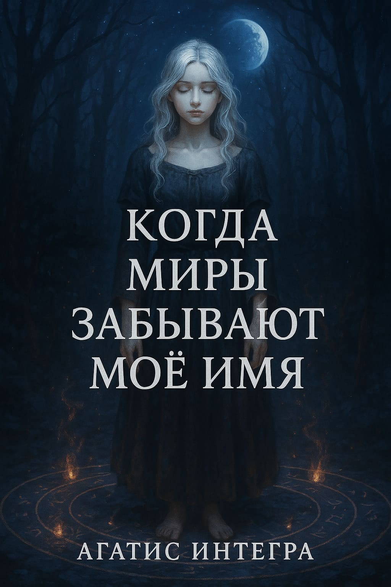

Каждое её пробуждение — это новая жизнь. Иногда она — богиня, иногда — город, а порой — лишь шёпот ветра. Она не помнит прошлого, но в каждом мире её ждёт кто-то, кто слишком хорошо знает её имя.
Её судьба — разгадывать тайны множества миров, искать ответы, сталкиваться с теми, кто был ей другом, врагом, любовником… или кем-то большим.
Каждое её пробуждение — это новая жизнь. Каждая новая жизнь — это маленькая смерть предыдущей. Она не помнит, кем была вчера. Не знает, кем станет завтра. Но кто-то знает. Кто-то всегда знает.
Иногда это нежная встреча. Иногда — нож в темноте. Иногда — старая комната, где она когда-то что-то оставила, и теперь это что-то ждёт её обратно.
Но когда память возвращается — приходит осознание: что, если она не должна существовать?
Что, если я не должна существовать?
А существую — потому что меня помнят?